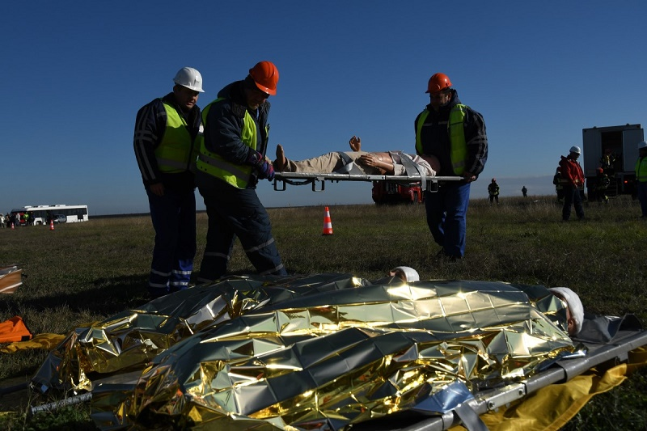
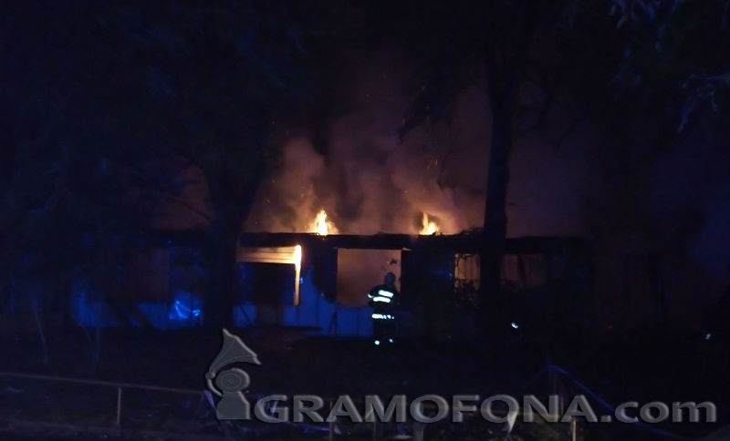
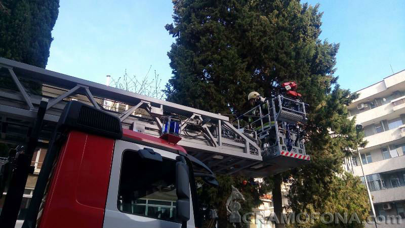
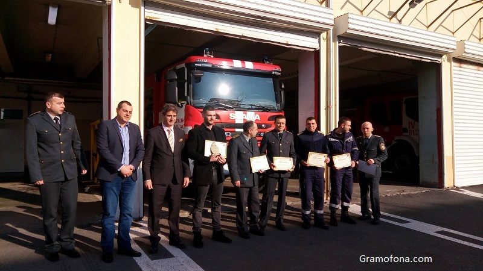

Екипите на летище Бургас показаха как се действа
при екстремна ситуация

Пълномащабно учебно занятие се проведе на летище Бургас. В него се включиха
аварийни екипи, служители на аеропорта, пожарникари и спасители. Сценарият
на тренировката пресъздаде авиационен инцидент на летището – при кацане на
летище Бургас, самолет излиза извън пистата и получава повреди по колесника
и двигателя.
Продължете да четете...
Клошари са спасени от горящите бараки до отрезвителя

В горящите постройки до бившия отрезвител е имало хора. Огнеборците са успели да
изведат двама души от там, съобщи началникът на Първа противопожарна служба в
Бургас гл. инспектор Николай Николаев. Едва след като огънят бъде изгасен
напълно
ще се провери дали вътре е имало още хора. Пожарът е овладян, но все още не е потушен
напълно. Проблем е, че изоставените постройки са пълни с боклуци, които продължават да
горят и тлеят.
Продължете да четете...
Над 2 000 лева пръснаха пожарникари,
за да спасяват бедстващи котки в Бургас

С хепиенд завърши втората акция по спасяването на бедстващо коте в Бургас, предаде
репортер на Gramofona.com. Животинчето се бе качило на над 20 метра височина, на
върха на един бор.
Продължете да четете...
Признание за бургаските огнеборци и най-смелите
доброволци

Единадесетокласниците от Търговската гимназия Красен Димитров, Юмет Сатаджъ
и Лъчезар Лалев получиха поредното си признание за смелостта, която
демонстрираха преди месеци. Тинейджърите успяха да изгасят пламнал до
училището им
автомобил. Заради безкористната си постъпка те получиха награда
и от областния етап на националния конкурс „Пожарникар на годината“.
Продължете да четете...